About distributed database management systems (DDBMSs) and their components
About distributed database management systems (DDBMSs) and their components12 DISTRIBUTED DATABASE MANAGEMENT SYSTEMS
In this chapter, you will learn:
About distributed database management systems (DDBMSs) and their components
How database implementation is affected by different levels of data and process distribution
How transactions are managed in a distributed database environment
How distributed database design draws on data partitioning and replication to balance performance, scalability, and availability
About the trade-offs of implementing a distributed data system
Preview
In this chapter, you will learn that a single database can be divided into several fragments. The fragments can be stored on different computers within a geographically dispersed network. Processing also can be dispersed among several different network sites, or nodes. The multisite database forms the core of the distributed database system.
The growth of distributed database systems has been fostered by the increased globalization of business operations, along with the rapid pace of technological change that has made distributed network-based services practical, more reliable, and cost-effective.
Although a distributed database system requires a more sophisticated DBMS, the end user should not be burdened by increased operational complexity. That is, the greater complexity of a distributed database system should be transparent to the end user.
The distributed database management system (DDBMS) treats a distributed database as a single logical database; therefore, the basic design concepts you learned in earlier chapters apply. However, although the end user need not be aware of the distributed database’s special characteristics, the distribution of data among different sites in a computer network clearly adds to the system’s complexity. For example, the design of a distributed database must consider the location of the data, the partitioning of the data into database fragments, and the replication of those fragments.
In today’s Web-centric environment, any distributed data system must be highly scalable; in other words, it must grow dynamically as demand increases. As demand grows, so do the system’s processing needs and inherent complexity. To accommodate such dynamic growth, trade-offs must be made to achieve some desirable properties.
12.1 THE EVOLUTION OF DISTRIBUTED DATABASE MANAGEMENT SYSTEMS
A distributed database management system (DDBMS) governs the storage and processing of logically related data over interconnected computer systems in which both data and processing are distributed among several sites. To understand how and why the DDBMS is different from the DBMS, it is useful to briefly examine the changes in the business environment that set the stage for the development of the DDBMS.
During the 1970s, corporations implemented centralized database management systems to meet their structured information needs. The use of a centralized database required that corporate data be stored in a single central site, usually a mainframe computer. Data access was provided through dumb terminals. The centralized approach, illustrated in Figure 12.1, worked well to fill the structured information needs of corporations, but it fell short when quickly moving events required faster response times and equally quick access to information. The slow progression from information request to approval to specialist to user simply did not serve decision makers well in a dynamic environment. What was needed was quick, unstructured access to databases, using ad hoc queries to generate on-the-spot information.
FIGURE 12.1 Centralized database management system
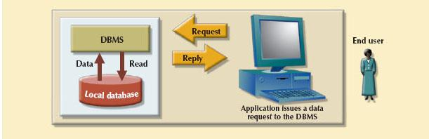
SOURCE: Course Technology/Cengage Learning
The last two decades gave birth to a series of crucial social and technological changes that affected the nature of the systems and the data they use:
• Business operations became global; with this change, competition expanded from the shop on the next corner to the Web store in cyberspace.
• Customer demands and market needs favored an on-demand transaction style, mostly based on Web-based services.
• Rapid social and technological changes fueled by low-cost, smart mobile devices increased the demand for complex and fast networks to interconnect them. As a consequence, corporations have increasingly adopted advanced network technologies as the platform for their computerized solutions. See Chapter 14, Database Connectivity and Web Technologies, for a discussion of cloud-based services.
• Data realms are converging in the digital world more frequently. As a result, applications must manage multiple types of data, such as voice, video, music, and images. Such data tend to be geographically distributed and remotely accessed from diverse locations via location-aware mobile devices.
These factors created a dynamic business environment in which companies had to respond quickly to competitive and technological pressures. As large business units restructured to form leaner, quickly reacting, dispersed operations, two database requirements became obvious:
• Rapid ad hoc data access became crucial in the quick-response decision-making environment.
• Distributed data access was needed to support geographically dispersed business units.
During recent years, these factors became even more firmly entrenched. However, the way they were addressed was strongly influenced by the following factors:
• The growing acceptance of the Internet as the platform for data access and distribution. The World Wide Web is effectively the repository for distributed data.
• The mobile wireless revolution. The widespread use of mobile wireless digital devices includes smart phones such as Apple’s iPhone and RIM’s BlackBerry and tablets such as Apple’s iPad, Motorola Xoom, and Samsung Galaxy. These devices have created high demand for data access. They access data from geographically dispersed locations and require varied data exchanges in multiple formats, such as data, voice, video, music, and pictures. Although distributed data access does not necessarily imply distributed databases, performance and failure tolerance requirements often lead to the use of data replication techniques similar to those in distributed databases.
• The accelerated growth of companies using “applications as a service.” This new type of service provides remote applications to companies that want to outsource their application development, maintenance, and operations. The company data are generally stored on central servers and are not necessarily distributed. Just as with mobile data access, this type of service may not require fully distributed data functionality; however, other factors such as performance and failure tolerance often require the use of data replication techniques similar to those in distributed databases.
• The increased focus on mobile business intelligence. More and more companies are embracing mobile technologies within their business plans. As companies use social networks to get closer to customers, the need for on-the-spot decision making increases. Although a data warehouse is not usually a distributed database, it does rely on techniques such as data replication and distributed queries that facilitate data extraction and integration. (You will learn more about this topic in Chapter 13, Business Intelligence and Data Warehouses.)
 ONLINE CONTENT
ONLINE CONTENT
To learn more about the Internet’s impact on data access and distribution, see Appendix I, Databases in Electronic Commerce, at www.cengagebrain.com.
At this point, the long-term impact of the Internet and the mobile revolution on distributed database design and management is just starting to be felt. Perhaps the success of the Internet and mobile technologies will foster the use of distributed databases as bandwidth becomes a less troublesome bottleneck. Perhaps the resolution of bandwidth problems will simply confirm the centralized database standard. In any case, distributed database concepts and components are likely to find a place in future database development, particularly for specialized mobile and location-aware applications.
The distributed database is especially desirable because centralized database management is subject to problems such as:
• Performance degradation because of a growing number of remote locations over greater distances
• High costs associated with maintaining and operating large central (mainframe) database systems and physical infrastructure
• Reliability problems created by dependence on a central site (single point of failure syndrome) and the need for data replication
• Scalability problems associated with the physical limits imposed by a single location, such as physical space, temperature conditioning, and power consumption
• Organizational rigidity imposed by the database, which means it might not support the fiexibility and agility required by modern global organizations
The dynamic business environment and the centralized database’s shortcomings spawned a demand for applications based on accessing data from different sources at multiple locations. Such a multiple-source/multiple-location database environment is best managed by a DDBMS.
12.2 DDBMS ADVANTAGES AND DISADVANTAGES
Distributed database management systems deliver several advantages over traditional systems. At the same time, they are subject to some problems. Table 12.1 summarizes the advantages and disadvantages associated with a DDBMS.
TABLE 12.1 Distributed DBMS Advantages and Disadvantages
ADVANTAGES | DISADVANTAGES |
• Data are located near the site of greatest demand. The data in a distributed database system are dispersed to match business requirements. |
• Complexity of management and control. Applications must recognize data location, and they must be able to stitch together data from various sites. Database administrators must have the ability to coordinate database activities to prevent database degradation due to data anomalies. |
• Faster data access. End users often work with only the nearest stored subset of the data. |
• Technological difficulty. Data integrity, transaction management, concurrency control, security, backup, recovery, and query optimization must all be addressed and resolved. |
• Faster data processing. A distributed database sys-tem spreads out the system’s workload by processing data at several sites. |
• Security. The probability of security lapses increases when data are located at multiple sites. The responsibility of data management will be shared by different people at several sites. |
• Growth facilitation. New sites can be added to the network without affecting the operations of other sites. |
• Lack of standards. There are no standard com-munication protocols at the database level. For example, different database vendors employ different and often incompatible techniques to manage the distribution of data and processing in a DDBMS environment. |
• Improved communications. Because local sites are smaller and located closer to customers, local sites foster better communication among departments and between customers and company staff. |
• Increased storage and infrastructure requirements. Multiple copies of data are required at different sites, thus requiring additional storage space. |
• Reduced operating costs. It is more cost-effective to add nodes to a network than to update a main-frame system. Development work is done more cheaply and quickly on low-cost PCs than on mainframes. |
• Increased training cost. Training costs are generally higher in a distributed model than they would be in a centralized model, sometimes even to the extent of offsetting operational and hardware savings. |
• User-friendly interface. PCs and workstations are usually equipped with an easy-to-use graphical user interface (GUI). The GUI simplifies training and use for end users. |
• Costs. Distributed databases require duplicated infrastructure to operate, such as physical location, environment, personnel, software, and licensing. |
• Less danger of a single-point failure. When one of the computers fails, the workload is picked up by other workstations. Data are also distributed at multiple sites. |
|
• Processor independence. The end user can access any available copy of the data, and an end user’s request is processed by any processor at the data location. |
|
Distributed databases are being used successfully in many Web staples such as Google and Amazon, but they still have a long way to go before they yield the full flexibility and power they theoretically possess.
The remainder of this chapter explores the basic components and concepts of the distributed database. Because the distributed database is usually based on the relational database model, relational terminology is used to explain the basic concepts and components. Even though some of the most widely used distributed databases are part of the NoSQL movement (see Chapter 2, Data Models), the basic concepts and fundamentals of distributed data still apply to them.
12.3 DISTRIBUTED PROCESSING AND DISTRIBUTED DATABASES
In distributed processing, a database’s logical processing is shared among two or more physically independent sites that are connected through a network. For example, the data input/output (I/O), data selection, and data validation might be performed on one computer, and a report based on that data might be created on another computer.
A basic distributed processing environment is illustrated in Figure 12.2, which shows that a distributed processing system shares the database processing chores among three sites connected through a communications network. Although the database resides at only one site (Miami), each site can access the data and update the database. The database is located on Computer A, a network computer known as the database server.
FIGURE 12.2 Distributed processing environment
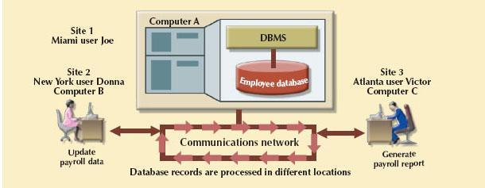
SOURCE: Course Technology/Cengage Learning
A distributed database, on the other hand, stores a logically related database over two or more physically independent sites. The sites are connected via a computer network. In contrast, the distributed processing system uses only a single-site database but shares the processing chores among several sites. In a distributed database system, a database is composed of several parts known as database fragments. The database fragments are located at different sites and can be replicated among various sites. Each database fragment is, in turn, managed by its local database process. An example of a distributed database environment is shown in Figure 12.3.
FIGURE 12.3 Distributed database environment
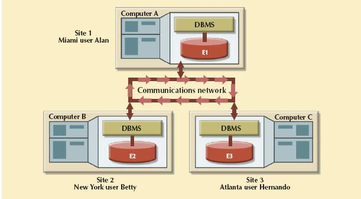
SOURCE: Course Technology/Cengage Learning
The database in Figure 12.3 is divided into three database fragments (E1, E2, and E3) located at different sites. The computers are connected through a network system. In a fully distributed database, the users Alan, Betty, and Hernando do not need to know the name or location of each database fragment in order to access the database. Also, the users might be at sites other than Miami, New York, or Atlanta and still be able to access the database as a single logical unit.
As you examine Figures 12.2 and 12.3, keep the following points in mind:
• Distributed processing does not require a distributed database, but a distributed database requires distributed processing. (Each database fragment is managed by its own local database process.)
• Distributed processing may be based on a single database located on a single computer. For the management of distributed data to occur, copies or parts of the database processing functions must be distributed to all data storage sites.
• Both distributed processing and distributed databases require a network of interconnected components.
12.4 CHARACTERISTICS OF DISTRIBUTED DATABASE MANAGEMENT SYSTEMS
A DDBMS governs the storage and processing of logically related data over interconnected computer systems in which both data and processing functions are distributed among several sites. A DBMS must have at least the following functions to be classified as distributed:
• Application interface to interact with the end user, application programs, and other DBMSs within the distributed database
• Validation to analyze data requests for syntax correctness
• Transformation to decompose complex requests into atomic data request components
• Query optimization to find the best access strategy (which database fragments must be accessed by the query, and how must data updates, if any, be synchronized?)
• Mapping to determine the data location of local and remote fragments
• I/O interface to read or write data from or to permanent local storage
• Formatting to prepare the data for presentation to the end user or to an application program
• Security to provide data privacy at both local and remote databases
• Backup and recovery to ensure the availability and recoverability of the database in case of a failure
• DB administration features for the database administrator
• Concurrency control to manage simultaneous data access and to ensure data consistency across database fragments in the DDBMS
• Transaction management to ensure that the data move from one consistent state to another; this activity includes the synchronization of local and remote transactions as well as transactions across multiple distributed segments
A fully distributed database management system must perform all of the functions of a centralized DBMS, as follows:
1. Receive the request of an application or end user.
2. Validate, analyze, and decompose the request. The request might include mathematical and logical operations such as the following: Select all customers with a balance greater than $1,000. The request might require data from only a single table, or it might require access to several tables.
3. Map the request’s logical-to-physical data components.
4. Decompose the request into several disk I/O operations.
5. Search for, locate, read, and validate the data.
6. Ensure database consistency, security, and integrity.
7. Validate the data for the conditions, if any, specified by the request.
8. Present the selected data in the required format.
In addition, a distributed DBMS must handle all necessary functions imposed by the distribution of data and processing, and it must perform those additional functions transparently to the end user. The DDBMS’s transparent data access features are illustrated in Figure 12.4.
FIGURE 12.4 A fully distributed database management system
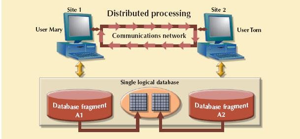
SOURCE: Course Technology/Cengage Learning
The single logical database in Figure 12.4 consists of two database fragments, A1 and A2, located at sites 1 and 2, respectively. Mary can query the database as if it were a local database; so can Tom. Both users “see” only one logical database and do not need to know the names of the fragments. In fact, the end users do not even need to know that the database is divided into fragments, nor do they need to know where the fragments are located.
To better understand the different types of distributed database scenarios, first consider the components of the distributed database system.
The DDBMS must include at least the following components:
• Computer workstations or remote devices (sites or nodes) that form the network system. The distributed database system must be independent of the computer system hardware.
• Network hardware and software components that reside in each workstation or device. The network components allow all sites to interact and exchange data. Because the components—computers, operating systems, network hardware, and so on—are likely to be supplied by different vendors, it is best to ensure that distributed database functions can be run on multiple platforms.
• Communications media that carry the data from one node to another. The DDBMS must be communications media-independent; that is, it must be able to support several types of communications media.
• The transaction processor (TP), which is the software component found in each computer or device that requests data. The transaction processor receives and processes the application’s remote and local data requests. The TP is also known as the application processor (AP) or the transaction manager (TM).
• The data processor (DP), which is the software component residing on each computer or device that stores and retrieves data located at the site. The DP is also known as the data manager (DM). A data processor may even be a centralized DBMS.
Figure 12.5 illustrates the placement of the components and the interaction among them. The communication among TPs and DPs is made possible through a specific set of rules, or protocols, used by the DDBMS.
FIGURE 12.5 Distributed database system management components
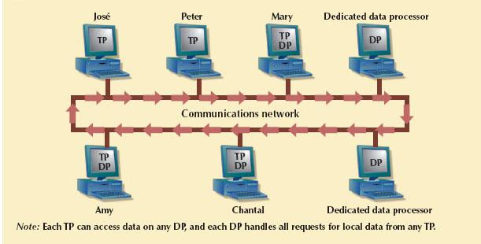
SOURCE: Course Technology/Cengage Learning
The protocols determine how the distributed database system will:
• Interface with the network to transport data and commands between DPs and TPs.
• Synchronize all data received from DPs (TP side) and route retrieved data to the appropriate TPs (DP side).
• Ensure common database functions in a distributed system. Such functions include data security, transaction management and concurrency control, data partitioning and synchronization, and data backup and recovery.
DPs and TPs should be added to the system transparently without affecting its operation. A TP and a DP can reside on the same computer, allowing the end user to access both local and remote data transparently. In theory, a DP can be an independent centralized DBMS with proper interfaces to support remote access from other independent DBMSs in the network.
12.6 LEVELS OF DATA AND PROCESS DISTRIBUTION
Current database systems can be classified on the basis of how process distribution and data distribution are supported. For example, a DBMS may store data in a single site (using a centralized DB) or in multiple sites (using a distributed DB), and may support data processing at one or more sites. Table 12.2 uses a simple matrix to classify database systems according to data and process distribution. These types of processes are discussed in the sections that follow.
TABLE 12.2 Database Systems: Levels of Data and Process Distribution
SINGLE-SITE DATA | MULTIPLE-SITE DATA | |
Single-site process | Host DBMS | Not applicable |
(Requires multiple processes) | ||
Multiple-site process | File server | Fully distributed |
Client/server DBMS (LAN DBMS) | Client/server DDBMS |
12.6.1 SINGLE-SITE PROCESSING, SINGLE-SITE DATA
In the single-site processing, single-site data (SPSD) scenario, all processing is done on a single host computer and all data are stored on the host computer’s local disk system. Processing cannot be done on the end user’s side of the system. Such a scenario is typical of most mainframe and midrange UNIX/Linux server DBMSs. The DBMS is on the host computer, which is accessed by terminals connected to it (see Figure 12.6). This scenario is also typical of the first generation of single-user microcomputer databases.
FIGURE 12.6 Single-site processing, single-site data (centralized)
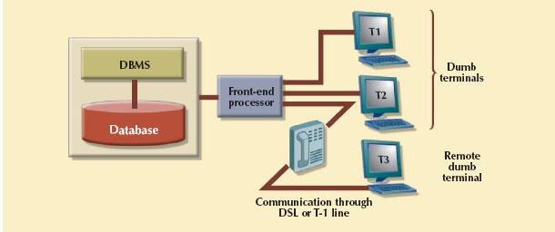
SOURCE: Course Technology/Cengage Learning
Using Figure 12.6 as an example, you can see that the functions of the TP and DP are embedded within the DBMS on the host computer. The DBMS usually runs under a time-sharing, multitasking operating system, which allows several processes to run concurrently on a host computer accessing a single DP. All data storage and data processing are handled by a single host computer.
12.6.2 MULTIPLE-SITE PROCESSING, SINGLE-SITE DATA
Under the multiple-site processing, single-site data (MPSD) scenario, multiple processes run on different computers that share a single data repository. Typically, the MPSD scenario requires a network file server running conventional applications that are accessed through a network. Many multiuser accounting applications running under a personal computer network fit such a description (see Figure 12.7).
As you examine Figure 12.7, note that:
• The TP on each workstation acts only as a redirector to route all network data requests to the file server.
• The end user sees the file server as just another hard disk. Because only the data storage input/output (I/O) is handled by the file server’s computer, the MPSD offers limited capabilities for distributed processing.
• The end user must make a direct reference to the file server to access remote data. All record- and file-locking activities are performed at the end-user location.
• All data selection, search, and update functions take place at the workstation, thus requiring that entire files travel through the network for processing at the workstation. Such a requirement increases network traffic, slows response time, and increases communication costs.
FIGURE 12.7 Multiple-site processing, single-site data
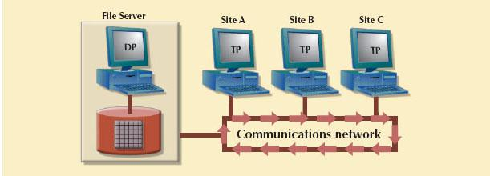
SOURCE: Course Technology/Cengage Learning
The inefficiency of the last condition can be illustrated easily. For example, suppose that the file server computer stores a CUSTOMER table containing 100,000 data rows, 50 of which have balances greater than $1,000. Suppose that site A issues the following SQL query:
SELECT *
FROM CUSTOMER
WHERE CUS_BALANCE > 1000;
All 100,000 CUSTOMER rows must travel through the network to be evaluated at site A. A variation of the multiplesite processing, single-site data approach is known as client/server architecture. Client/server architecture is similar to that of the network file server except that all database processing is done at the server site, thus reducing network traffic. Although both the network file server and the client/server systems perform multiple-site processing, the latter’s processing is distributed. Note that the network file server approach requires the database to be located at a single site. In contrast, the client/server architecture is capable of supporting data at multiple sites.
ONLINE CONTENT
Appendix F, Client/Server Systems, is available at www.cengagebrain.com.
12.6.3 MULTIPLE-SITE PROCESSING, MULTIPLE-SITE DATA
The multiple-site processing, multiple-site data (MPMD) scenario describes a fully distributed DBMS with support for multiple data processors and transaction processors at multiple sites. Depending on the level of support for various types of databases, DDBMSs are classified as either homogeneous or heterogeneous.
Homogeneous DDBMSs integrate multiple instances of the same DBMS over a network—for example, multiple instances of Oracle 11g running on different platforms. In contrast, heterogeneous DDBMSs integrate different types of DBMSs over a network, but all support the same data model. For example, Table 12.3 lists several relational database systems that could be integrated within a DDBMS. A fully heterogeneous DDBMS will support different DBMSs, each one supporting a different data model, running under different computer systems.
TABLE 12.3 Heterogeneous Distributed Database Scenario
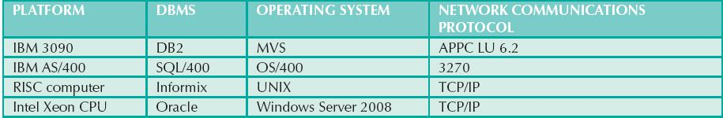
Distributed database implementations are better understood as an abstraction layer on top of a DBMS. This abstraction layer provides additional functionality that enables support for distributed database features, including straightforward data links, replication, advanced data fragmentation, synchronization, and integration. In fact, most database vendors provide for increasing levels of data fragmentation, replication, and integration. Therefore, the support for distributed databases can be better seen as a continuous spectrum that goes from homogeneous to fully heterogeneous distributed data management. Consequently, at any point on this spectrum, a DDBMS is subject to certain restrictions. For example:
• Remote access is provided on a read-only basis and does not support write privileges.
• Restrictions are placed on the number of remote tables that may be accessed in a single transaction.
• Restrictions are placed on the number of distinct databases that may be accessed.
• Restrictions are placed on the database model that may be accessed. Thus, access may be provided to relational databases but not to network or hierarchical databases.
The preceding list of restrictions is by no means exhaustive. The DDBMS technology continues to change rapidly, and new features are added frequently. (In Chapter 2, you learned about the latest generation of NoSQL databases that provide high levels of data distribution.) Managing data at multiple sites leads to a number of issues that must be addressed and understood. The next section examines several key features of distributed database management systems.
12.7 DISTRIBUTED DATABASE TRANSPARENCY FEATURES
A distributed database system should provide some desirable transparency features that make all the system’s complexities hidden to the end user. In other words, the end user should have the sense of working with a centralized DBMS. For this reason, the minimum desirable DDBMS transparency features are:
• Distribution transparency, which allows a distributed database to be treated as a single logical database. If a DDBMS exhibits distribution transparency, the user does not need to know:
- That the data are partitioned—meaning the table’s rows and columns are split vertically or horizontally and stored among multiple sites
- That the data are geographically dispersed among multiple sites
- That the data are replicated among multiple sites
• Transaction transparency, which allows a transaction to update data at more than one network site. Transaction transparency ensures that the transaction will be either entirely completed or aborted, thus maintaining database integrity.
• Failure transparency, which ensures that the system will continue to operate in the event of a node or network failure. Functions that were lost because of the failure will be picked up by another network node. This is a very important feature, particularly in organizations that depend on Web presence as the backbone for maintaining trust in their business.
• Performance transparency, which allows the system to perform as if it were a centralized DBMS. The system will not suffer any performance degradation due to its use on a network or because of the network’s platform differences. Performance transparency also ensures that the system will find the most cost-effective path to access remote data. The system should be able to “scale out” in a transparent manner, or increase performance capacity by adding more transaction or data-processing nodes, without affecting the overall performance of the system.
• Heterogeneity transparency, which allows the integration of several different local DBMSs (relational, network, and hierarchical) under a common, or global, schema. The DDBMS is responsible for translating the data requests from the global schema to the local DBMS schema.
The following sections discuss each of these transparency features in greater detail.
12.8 DISTRIBUTION TRANSPARENCY
Distribution transparency allows a physically dispersed database to be managed as though it were a centralized database. The level of transparency supported by the DDBMS varies from system to system. Three levels of distribution transparency are recognized:
• Fragmentation transparency is the highest level of transparency. The end user or programmer does not need to know that a database is partitioned. Therefore, neither fragment names nor fragment locations are specified prior to data access.
• Location transparency exists when the end user or programmer must specify the database fragment names but does not need to specify where those fragments are located.
• Local mapping transparency exists when the end user or programmer must specify both the fragment names and their locations.
Transparency features are summarized in Table 12.4.
TABLE 12.4 Summary of Transparency Features
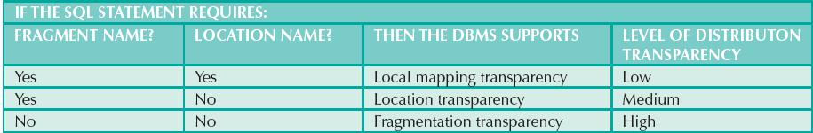
NOTE
As you examine Table 12.4, notice that there is no reference to a situation in which the fragment name is “No” and the location name is “Yes.” The reason is simple: you cannot have a location name that fails to reference an existing fragment. If you don’t need to specify a fragment name, its location is clearly irrelevant.
To illustrate the use of various transparency levels, suppose you have an EMPLOYEE table that contains the attributes EMP_NAME, EMP_DOB, EMP_ADDRESS, EMP_DEPARTMENT, and EMP_SALARY. The EMPLOYEE data are distributed over three different locations: New York, Atlanta, and Miami. The table is divided by location; that is, New York employee data are stored in fragment E1, Atlanta employee data are stored in fragment E2, and Miami employee data are stored in fragment E3 (see Figure 12.8).
Now suppose that the end user wants to list all employees born before January 1, 1960. To focus on the transparency issues, also suppose that the EMPLOYEE table is fragmented and each fragment is unique. The unique fragment condition indicates that each row is unique, regardless of the fragment in which it is located. Finally, assume that no portion of the database is replicated at any other site on the network.
Depending on the level of distribution transparency support, you may examine three query cases.
FIGURE 12.8 Fragment locations
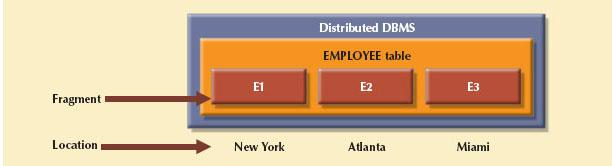
SOURCE: Course Technology/Cengage Learning
Case 1: The Database Supports Fragmentation Transparency
The query conforms to a nondistributed database query format; that is, it does not specify fragment names or locations. The query reads:
SELECT *
FROM EMPLOYEE
WHERE EMP_DOB < ‘01-JAN-1960’;
Case 2: The Database Supports Location Transparency
Fragment names must be specified in the query, but the fragment’s location is not specified. The query reads:
SELECT *
FROM E1
WHERE EMP_DOB < ‘01-JAN-1960’;
UNION
SELECT *
FROM E2
WHERE EMP_DOB < ‘01-JAN-1960’;
UNION
SELECT *
FROM E3
WHERE EMP_DOB < ‘01-JAN-1960’;
Case 3: The Database Supports Local Mapping Transparency
Both the fragment name and its location must be specified in the query. Using pseudo-SQL:
SELECT *
FROM El NODE NY
WHERE EMP_DOB < ‘01-JAN-1960’;
UNION
SELECT *
FROM E2 NODE ATL
WHERE EMP_DOB < ‘01-JAN-1960’;
UNION
SELECT *
FROM E3 NODE MIA
WHERE EMP_DOB < ‘01-JAN-1960’;
NOTE
NODE indicates the location of the database fragment. NODE is used for illustration purposes and is not part of the standard SQL syntax.
As you examine the preceding query formats, you can see how distribution transparency affects the way end users and programmers interact with the database.
Distribution transparency is supported by a distributed data dictionary (DDD) or a distributed data catalog (DDC). The DDC contains the description of the entire database as seen by the database administrator. The database description, known as the distributed global schema, is the common database schema used by local TPs to translate user requests into subqueries (remote requests) that will be processed by different DPs. The DDC is itself distributed, and it is replicated at the network nodes. Therefore, the DDC must maintain consistency through updating at all sites.
Keep in mind that some of the current DDBMS implementations impose limitations on the level of transparency support. For instance, you might be able to distribute a database, but not a table, across multiple sites. Such a condition indicates that the DDBMS supports location transparency but not fragmentation transparency.
Transaction transparency is a DDBMS property that ensures database transactions will maintain the distributed database’s integrity and consistency. Remember that a DDBMS database transaction can update data stored in many different computers connected in a network. Transaction transparency ensures that the transaction will be completed only when all database sites involved in the transaction complete their part of the transaction.
Distributed database systems require complex mechanisms to manage transactions and ensure the database’s consistency and integrity. To understand how the transactions are managed, you should know the basic concepts governing remote requests, remote transactions, distributed transactions, and distributed requests.
12.9.1 DISTRIBUTED REQUESTS AND DISTRIBUTED TRANSACTIONS1
Whether or not a transaction is distributed, it is formed by one or more database requests. The basic difference between a nondistributed transaction and a distributed transaction is that the latter can update or request data from several different remote sites on a network. To better understand distributed transactions, begin by learning the difference between remote and distributed transactions, using the BEGIN WORK and COMMIT WORK transaction format. Assume the existence of location transparency to avoid having to specify the data location.
A remote request, illustrated in Figure 12.9, lets a single SQL statement access the data that are to be processed by a single remote database processor. In other words, the SQL statement (or request) can reference data at only one remote site.
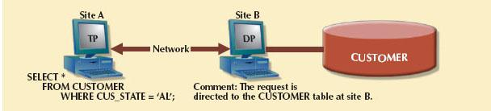
SOURCE: Course Technology/Cengage Learning
Similarly, a remote transaction, composed of several requests, accesses data at a single remote site. A remote transaction is illustrated in Figure 12.10.
FIGURE 12.10 A remote transaction
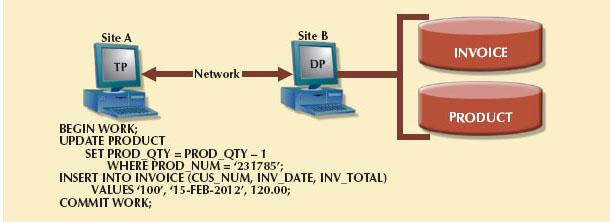
SOURCE: Course Technology/Cengage Learning
As you examine Figure 12.10, note the following remote transaction features:
• The transaction updates the PRODUCT and INVOICE tables (located at site B).
• The remote transaction is sent to the remote site B and executed there.
• The transaction can reference only one remote DP.
• Each SQL statement (or request) can reference only one (the same) remote DP at a time, and the entire transaction can reference and be executed at only one remote DP.
A distributed transaction can reference several different local or remote DP sites. Although each single request can reference only one local or remote DP site, the transaction as a whole can reference multiple DP sites because each request can reference a different site. The distributed transaction process is illustrated in Figure 12.11.
FIGURE 12.11 A distributed transaction
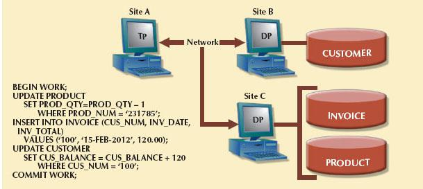
SOURCE: Course Technology/Cengage Learning
Note the following features in Figure 12.11:
• The transaction references two remote sites, B and C.
• The first two requests, UPDATE PRODUCT and INSERT INTO INVOICE, are processed by the DP at the remote site C, and the last request (UPDATE CUSTOMER) is processed by the DP at the remote site B.
• Each request can access only one remote site at a time.
The third characteristic may create problems. For example, suppose the PRODUCT table is divided into two fragments, PRODl and PROD2, located at sites B and C, respectively. Given that scenario, the preceding distributed transaction cannot be executed because the following request cannot access data from more than one remote site:
SELECT *
FROM PRODUCT
WHERE PROD_NUM = ‘231785’;
Therefore, the DBMS must be able to support a distributed request.
A distributed request lets a single SQL statement reference data located at several different local or remote DP sites. Because each request (SQL statement) can access data from more than one local or remote DP site, a transaction can access several sites. The ability to execute a distributed request provides fully distributed database processing because you can:
• Partition a database table into several fragments.
• Reference one or more of those fragments with only one request. In other words, there is fragmentation transparency.
The location and partition of the data should be transparent to the end user. Figure 12.12 illustrates a distributed request. As you examine the figure, note that the transaction uses a single SELECT statement to reference two tables, CUSTOMER and INVOICE. The two tables are located at two different sites, B and C.
FIGURE 12.12 A distributed request
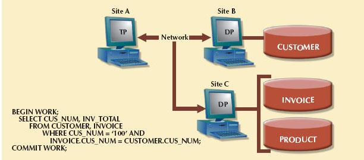
SOURCE: Course Technology/Cengage Learning
The distributed request feature also allows a single request to reference a physically partitioned table. For example, suppose that a CUSTOMER table is divided into two fragments, C1 and C2, located at sites B and C, respectively. Further suppose that the end user wants to obtain a list of all customers whose balances exceed $250. The request is illustrated in Figure 12.13. Full fragmentation transparency support is provided only by a DDBMS that supports distributed requests.
FIGURE 12.13 Another distributed request
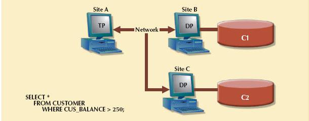
SOURCE: Course Technology/Cengage Learning
Understanding the different types of database requests in distributed database systems helps you address the transaction transparency issue more effectively. Transaction transparency ensures that distributed transactions are treated as centralized transactions, ensuring their serializability. (Review Chapter 10, Transaction Management and Concurrency Control, if necessary.) That is, the execution of concurrent transactions, whether they are distributed or not, will take the database from one consistent state to another.
12.9.2 DISTRIBUTED CONCURRENCY CONTROL
Concurrency control becomes especially important in distributed databases because multisite, multiple-process operations are more likely to create data inconsistencies and deadlocked transactions than single-site systems. For example, the TP component of a DDBMS must ensure that all parts of the transaction are completed at all sites before a final COMMIT is issued to record the transaction.
Suppose that a transaction updates data at three DP sites. The first two DP sites complete the transaction and commit the data at each local DP; however, the third DP site cannot commit the transaction. Such a scenario would yield an inconsistent database, with its inevitable integrity problems, because committed data cannot be uncommitted! This problem is illustrated in Figure 12.14.
FIGURE 12.14 The effect of a premature COMMIT
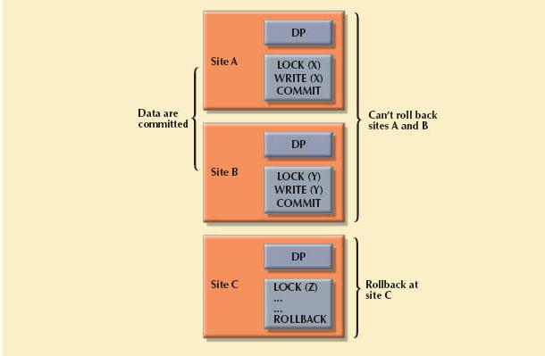
SOURCE: Course Technology/Cengage Learning
The solution to this problem is a two-phase commit protocol, which you will explore next.
12.9.3 TWO-PHASE COMMIT PROTOCOL
Centralized databases require only one DP. All database operations take place at only one site, and the consequences of database operations are immediately known to the DBMS. In contrast, distributed databases make it possible for a transaction to access data at several sites. A final COMMIT must not be issued until all sites have committed their parts of the transaction. The two-phase commit protocol (2PC) guarantees that if a portion of a transaction operation cannot be committed, all changes made at the other sites participating in the transaction will be undone to maintain a consistent database state.
Each DP maintains its own transaction log. The two-phase commit protocol requires that the transaction log entry for each DP be written before the database fragment is actually updated (see Chapter 10). Therefore, the two-phase commit protocol requires a DO-UNDO-REDO protocol and a write-ahead protocol.
The DO-UNDO-REDO protocol is used by the DP to roll transactions back and forward with the help of the system’s transaction log entries. The DO-UNDO-REDO protocol defines three types of operations:
• DO performs the operation and records the “before” and “after” values in the transaction log.
• UNDO reverses an operation, using the log entries written by the DO portion of the sequence.
• REDO redoes an operation, using the log entries written by the DO portion of the sequence.
To ensure that the DO, UNDO, and REDO operations can survive a system crash while they are being executed, a write-ahead protocol is used. The write-ahead protocol forces the log entry to be written to permanent storage before the actual operation takes place.
The two-phase commit protocol defines the operations between two types of nodes: the coordinator and one or more subordinates, or cohorts. The participating nodes agree on a coordinator. Generally, the coordinator role is assigned to the node that initiates the transaction. However, different systems implement various, more sophisticated election methods. The protocol is implemented in two phases, as illustrated in the following sections.
Phase 1: Preparation
The coordinator sends a PREPARE TO COMMIT message to all subordinates.
1. The subordinates receive the message, write the transaction log using the write-ahead protocol, and send an acknowledgment message (YES/PREPARED TO COMMIT or NO/NOT PREPARED) to the coordinator.
2. The coordinator makes sure that all nodes are ready to commit, or it aborts the action.
If all nodes are PREPARED TO COMMIT, the transaction goes to Phase 2. If one or more nodes reply NO or NOT PREPARED, the coordinator broadcasts an ABORT message to all subordinates.
Phase 2: The Final COMMIT
1. The coordinator broadcasts a COMMIT message to all subordinates and waits for the replies.
2. Each subordinate receives the COMMIT message and then updates the database using the DO protocol.
3. The subordinates reply with a COMMITTED or NOT COMMITTED message to the coordinator.
If one or more subordinates do not commit, the coordinator sends an ABORT message, thereby forcing them to UNDO all changes.
The objective of the two-phase commit is to ensure that each node commits its part of the transaction; otherwise, the transaction is aborted. If one of the nodes fails to commit, the information necessary to recover the database is in the transaction log, and the database can be recovered with the DO-UNDO-REDO protocol. (Remember that the log information was updated using the write-ahead protocol.)
12.10 PERFORMANCE AND FAILURE TRANSPARENCY
One of the most important functions of a database is its ability to make data available. Web-based distributed data systems demand high availability, which means not only that data are accessible but that requests are processed in a timely manner. For example, the average Google search has a subsecond response time. When was the last time you entered a Google query and waited more than a couple of seconds for the results?
Performance transparency allows a DDBMS to perform as if it were a centralized database. In other words, no performance degradation should be incurred due to data distribution. Failure transparency ensures that the system will continue to operate in the case of a node or network failure. Although these are two separate issues, they are interrelated in that a failing node or congested network path could cause performance problems. Therefore, both issues are addressed in this section.
NOTE
Chapter 11, Database Performance Tuning and Query Optimization, provides additional details about query optimization.
The objective of query optimization is to minimize the total cost associated with the execution of a request. The costs associated with a request are a function of the following:
• Access time (I/O) cost involved in accessing the data from multiple remote sites
• Communication cost associated with data transmission among nodes in distributed database systems
• CPU time cost associated with the processing overhead of managing distributed transactions
Although costs are often classified either as communication or processing costs, it is difficult to separate the two. Not all query optimization algorithms use the same parameters, and not all algorithms assign the same weight to each parameter. For example, some algorithms minimize total time, others minimize the communication time, and still others do not factor in the CPU time, considering its cost insignificant relative to other costs.
As you learned in Chapter 11, a centralized database evaluates every data request to find the most efficient way to access the data. This is a reasonable requirement, considering that all data are locally stored and all active transactions working on the data are known to the central DBMS. In contrast, in a DDBMS, transactions are distributed among multiple nodes; therefore, determining what data are being used becomes more complex. Hence, resolving data requests in a distributed data environment must take the following points into consideration:
• Data distribution. In a DDBMS, query translation is more complicated because the DDBMS must decide which fragment to access. (Distribution transparency was explained earlier in this chapter.) In this case, a TP executing a query must choose what fragments to access, create multiple data requests to the chosen remote DPs, combine the DP responses, and present the data to the application.
• Data replication. In addition, the data may also be replicated at several different sites. The data replication makes the access problem even more complex because the database must ensure that all copies of the data are consistent. Therefore, an important characteristic of query optimization in distributed database systems is that it must provide replica transparency. Replica transparency refers to the DDBMS’s ability to hide multiple copies of data from the user. This ability is particularly important with data update operations. If a read-only request is being processed, it can be satisfied by accessing any available remote DP. However, processing a write request also involves “synchronizing” all existing fragments to maintain data consistency. The two-phase commit protocol you learned about in Section 12.9.3 ensures that the transaction will complete successfully. However, if data are replicated at other sites, the DDBMSs must also ensure the consistency of all the fragments—that is, all fragments should be mutually consistent. To accomplish this, a DP captures all changes and pushes them to each remote replica. This introduces delays in the system and basically means that not all data changes are immediately seen by all replicas. (The implications of this issue are explained in Section 12.12, The CAP Theorem.)
• Network and node availability. The response time associated with remote sites cannot be easily predetermined because some nodes finish their part of the query in less time than others and network path performance varies because of bandwidth and traffic loads. Hence, to achieve performance transparency, the DDBMS should consider issues such as network latency, the delay imposed by the amount of time required for a data packet to make a round trip from point A to point B; or network partitioning, the delay imposed when nodes become suddenly unavailable due to a network failure.
Carefully planning how to partition a database and where to locate the database fragments can help ensure the performance and consistency of a distributed database. The following section discusses issues for distributed database design.
12.11 DISTRIBUTED DATABASE DESIGN
Whether the database is centralized or distributed, the design principles and concepts described in Chapters 3, 4, and 6 are still applicable. However, the design of a distributed database introduces three new issues:
• How to partition the database into fragments
• Which fragments to replicate
• Where to locate those fragments and replicas
Data fragmentation and data replication deal with the first two issues, and data allocation deals with the third issue. Ideally, data in a distributed database should be evenly distributed to maximize performance, increase availability (reduce bottlenecks), and provide location awareness, which is an ever-increasing requirement for mobile applications.
Data fragmentation allows you to break a single object into two or more segments, or fragments. The object might be a user’s database, a system database, or a table. Each fragment can be stored at any site over a computer network. Information about data fragmentation is stored in the distributed data catalog (DDC), from which it is accessed by the TP to process user requests.
Data fragmentation strategies, as discussed here, are based at the table level and consist of dividing a table into logical fragments. You will explore three types of data fragmentation strategies: horizontal, vertical, and mixed. (Keep in mind that a fragmented table can always be re-created from its fragmented parts by a combination of unions and joins.)
• Horizontal fragmentation refers to the division of a relation into subsets (fragments) of tuples (rows). Each fragment is stored at a different node, and each fragment has unique rows. However, the unique rows all have the same attributes (columns). In short, each fragment represents the equivalent of a SELECT statement, with the WHERE clause on a single attribute.
• Vertical fragmentation refers to the division of a relation into attribute (column) subsets. Each subset (fragment) is stored at a different node, and each fragment has unique columns—with the exception of the key column, which is common to all fragments. This is the equivalent of the PROJECT statement in SQL.
• Mixed fragmentation refers to a combination of horizontal and vertical strategies. In other words, a table may be divided into several horizontal subsets (rows), each one having a subset of the attributes (columns).
To illustrate the fragmentation strategies, use the CUSTOMER table for the XYZ Company, as depicted in Figure 12.15. The table contains the attributes CUS_NUM, CUS_NAME, CUS_ADDRESS, CUS_STATE, CUS_LIMIT, CUS_BAL, CUS_RATING, and CUS_DUE.
FIGURE 12.15 A sample CUSTOMER table
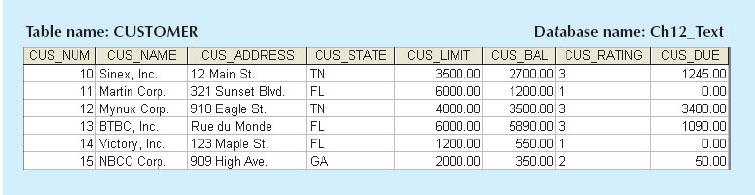
SOURCE: Course Technology/Cengage Learning
ONLINE CONTENT
The databases used to illustrate the material in this chapter are available at www.cengagebrain.com.
Horizontal Fragmentation
In this case, a table is divided into multiple subsets of rows. There are various ways to partition a table horizontally:
• Round-robin partitioning. Rows are assigned to a given fragment in a round-robin fashion (F1, F2, F3, ..., Fn) to ensure an even distribution of rows among all fragments. However, this is not a good strategy if you require “location awareness”—the ability to determine which DP node will process a query based on the geospatial location of the requester. For example, you would want all queries from Florida customers to be resolved from a fragment that stores only Florida customers. Of course, you also would like this fragment to be located in a node close to Florida.
• Range partitioning based on a partition key. A partition key is one or more attributes in a table that determine the fragment in which a row will be stored. For example, if you want to provide location awareness, a good partition key would be the customer state field. This is the most common and useful data partitioning strategy.
Take a closer look at how to use a partition key to partition a table. Suppose that the XYZ Company’s corporate management requires information about its customers in all three states, but company locations in each state (TN, FL, and GA) require data regarding local customers only. Based on such requirements, you decide to distribute the data by state. Therefore, you define the horizontal fragments to conform to the structure shown in Table 12.15.
TABLE 12.5 Horizontal Fragmentation of the CUSTOMER Table by State
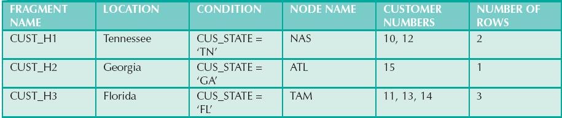
The partition key will be the CUS_STATE field. Each horizontal fragment may have a different number of rows, but each fragment must have the same attributes. The resulting fragments yield the three tables depicted in Figure 12.16.
FIGURE 12.16 Table fragments in three locations
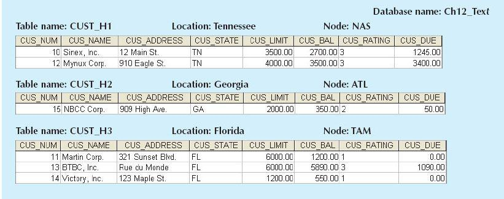
SOURCE: Course Technology/Cengage Learning
Vertical Fragmentation
You may also divide the CUSTOMER relation into vertical fragments that are composed of a collection of attributes. For example, suppose that the company is divided into two departments: the service department and the collections department. Each department is located in a separate building, and each has an interest in only a few of the CUSTOMER table’s attributes. In this case, the fragments are defined as shown in Table 12.6.
TABlE 12.6 Vertical Fragmentation of the CUSTOMER Table
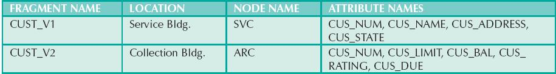
Each vertical fragment must have the same number of rows, but the inclusion of the different attributes depends on the key column. The vertical fragmentation results are displayed in Figure 12.17. Note that the key attribute (CUS_NUM) is common to both fragments CUST_V1 and CUST_V2.
FIGURE 12.17 Vertically fragmented table contents
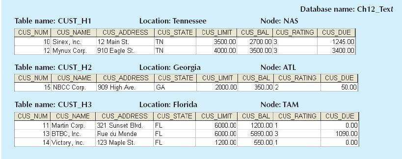
SOURCE: Course Technology/Cengage Learning
Mixed Fragmentation
The XYZ Company’s structure requires that the CUSTOMER data be fragmented horizontally to accommodate the various company locations; within the locations, the data must be fragmented vertically to accommodate the two departments (service and collection). In short, the CUSTOMER table requires mixed fragmentation.
Mixed fragmentation requires a two-step procedure. First, horizontal fragmentation is introduced for each site based on the location within a state (CUS_STATE). The horizontal fragmentation yields the subsets of customer tuples (horizontal fragments) that are located at each site. Because the departments are located in different buildings, vertical fragmentation is used within each horizontal fragment to divide the attributes, thus meeting each department’s information needs at each subsite. Mixed fragmentation yields the results displayed in Table 12.7.
TABLE 12.7 Mixed Fragmentation of the CUSTOMER Table
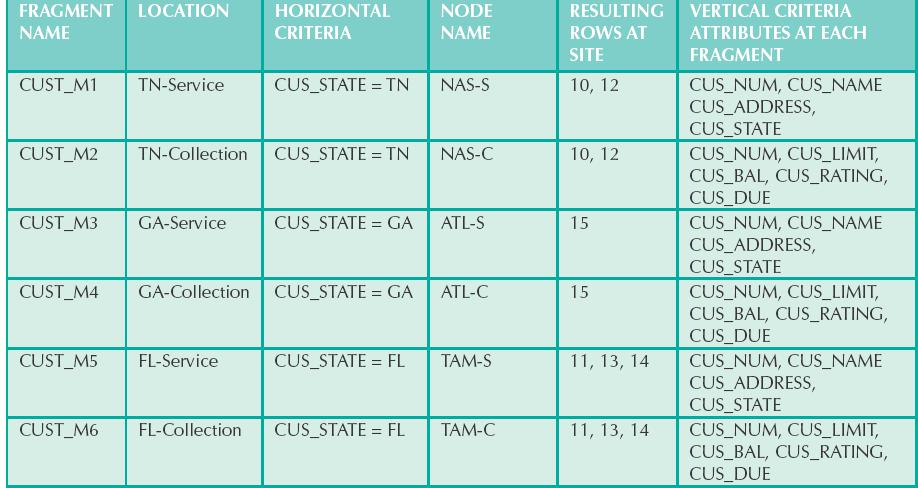
Each fragment displayed in Table 12.7 contains customer data by state and, within each state, by department location to fit each department’s data requirements. The tables corresponding to the fragments listed in Table 12.7 are shown in Figure 12.18.
FIGURE 12.18 Table contents after the mixed fragmentation process
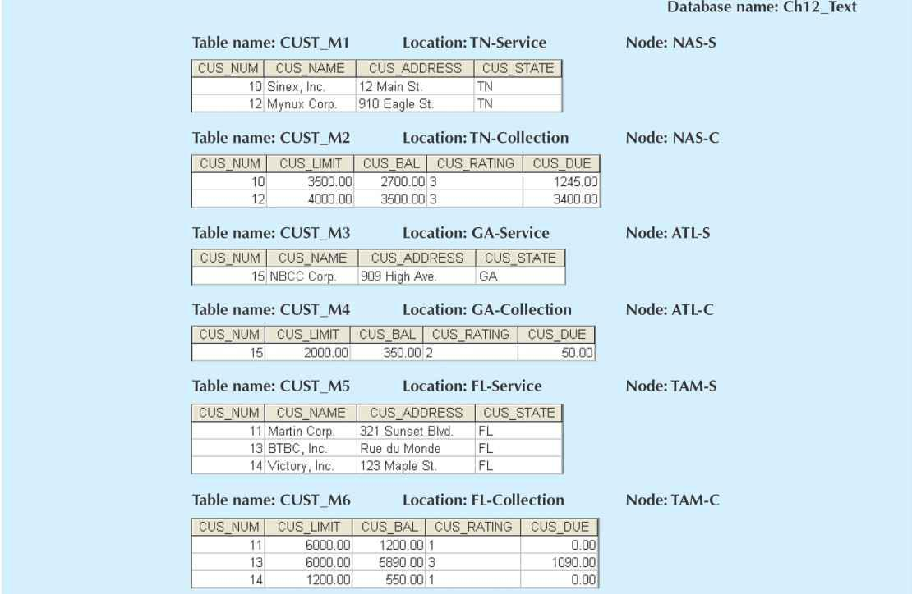
SOURCE: Course Technology/Cengage Learning
Data replication refers to the storage of data copies at multiple sites served by a computer network. Fragment copies can be stored at several sites to serve specific information requirements. Because the existence of fragment copies can enhance data availability and response time, data copies can help to reduce communication and total query costs.
Suppose database A is divided into two fragments, A1 and A2. Within a replicated distributed database, the scenario depicted in Figure 12.19 is possible: fragment A1 is stored at sites S1 and S2, while fragment A2 is stored at sites S2 and S3.
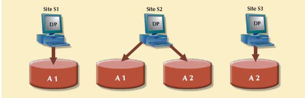
SOURCE: Course Technology/Cengage Learning
Replicated data are subject to the mutual consistency rule, which requires that all copies of data fragments be identical. Therefore, to maintain data consistency among the replicas, the DDBMS must ensure that a database update is performed at all sites where replicas exist.
There are basically two styles of replication:
• Push replication. After a data update, the originating DP node sends the changes to the replica nodes to ensure that data are immediately updated. This type of replication focuses on maintaining data consistency. However, it decreases data availability due to the latency involved in ensuring data consistency at all nodes.
• Pull replication. After a data update, the originating DP node sends “messages” to the replica nodes to notify them of the update. The replica nodes decide when to apply the updates to their local fragment. In this type of replication, data updates propagate more slowly to the replicas. The focus is on maintaining data availability. However, this style of replication allows for temporary data inconsistencies.
Although replication has some benefits, such as improved data availability, better load distribution, improved data failure tolerance, and reduced query costs, it also imposes additional DDBMS processing overhead because each data copy must be maintained by the system. Furthermore, because the data are replicated at another site, there are associated storage costs and increased transaction times (as data must be updated at several sites concurrently to comply with the mutual consistency rule). To illustrate the replica overhead imposed on a DDBMS, consider the processes that the DDBMS must perform to use the database:
• If the database is fragmented, the DDBMS must decompose a query into subqueries to access the appropriate fragments.
• If the database is replicated, the DDBMS must decide which copy to access. A READ operation selects the nearest copy to satisfy the transaction. A WRITE operation requires that all copies be selected and updated to satisfy the mutual consistency rule.
• The TP sends a data request to each selected DP for execution.
• The DP receives and executes each request and sends the data back to the TP.
• The TP assembles the DP responses.
The problem becomes more complex when you consider additional factors such as network topology and communication throughputs.
Three replication scenarios exist: a database can be fully replicated, partially replicated, or unreplicated.
• A fully replicated database stores multiple copies of each database fragment at multiple sites. In this case, all database fragments are replicated. A fully replicated database can be impractical due to the amount of overhead it imposes on the system.
• A partially replicated database stores multiple copies of some database fragments at multiple sites. Most DDBMSs are able to handle the partially replicated database well.
• An unreplicated database stores each database fragment at a single site. Therefore, there are no duplicate database fragments.
Several factors influence the decision to use data replication:
• Database size. The amount of data replicated will have an impact on the storage requirements and the data transmission costs. Replicating large amounts of data requires a window of time and higher network bandwidth that could affect other applications.
• Usage frequency. The frequency of data usage determines how frequently the data need to be updated. Frequently used data should be updated more often, for example, than large data sets that are used only every quarter.
• Costs. Costs include those for performance, software overhead, and management associated with synchronizing transactions and their components versus fault-tolerance benefits that are associated with replicated data.
When the usage frequency of remotely located data is high and the database is large, data replication can reduce the cost of data requests. Data replication information is stored in the DDC, whose contents are used by the TP to decide which copy of a database fragment to access. The data replication makes it possible to restore lost data.
Data allocation describes the process of deciding where to locate data. Data allocation strategies are as follows:
• With centralized data allocation, the entire database is stored at one site.
• With partitioned data allocation, the database is divided into two or more disjointed parts (fragments) and stored at two or more sites.
• With replicated data allocation, copies of one or more database fragments are stored at several sites.
Data distribution over a computer network is achieved through data partitioning, through data replication, or through a combination of both. Data allocation is closely related to the way a database is divided or fragmented. Most data allocation studies focus on one issue: which data to locate where.
Data allocation algorithms consider a variety of factors, including:
• Performance and data availability goals
• Size, number of rows, and number of relations that an entity maintains with other entities
• Types of transactions to be applied to the database and the attributes accessed by each of those transactions
• Disconnected operation for mobile users. In some cases, the design might consider the use of loosely disconnected fragments for mobile users, particularly for read-only data that do not require frequent updates and for which the replica update windows may be longer. (A replica update window is the amount of time available to perform a data-processing task that cannot be executed concurrently with other tasks.)
Most algorithms include data such as network topology, network bandwidth and throughput, data size, and location. No optimal or universally accepted algorithm exists yet, and each database vendor implements its own version to showcase the strengths of its respective products.
In a 2000 symposium on distributed computing, Dr. Eric Brewer stated in his presentation that “in any highly distributed data system there are three commonly desirable properties: consistency, availability, and partition tolerance. However, it is impossible for a system to provide all three properties at the same time.”2 The initials CAP stand for the three desirable properties. Consider these three properties in more detail:
• Consistency. In a distributed database, consistency takes a bigger role. All nodes should see the same data at the same time, which means that the replicas should be immediately updated. However, this involves dealing with latency and network partitioning delays, as you learned in Section 12.10.
• Availability. Simply speaking, a request is always fulfilled by the system. No received request is ever lost. If you are buying tickets online, you do not want the system to stop in the middle of the operation. This is a paramount requirement of all Web-centric organizations.
• Partition tolerance. The system continues to operate even in the event of a node failure. This is the equivalent of failure transparency in distributed databases (see Section 12.7). The system will fail only if all nodes fail.
Although the CAP theorem focuses on highly distributed Web-based systems, its implications are widespread for all distributed systems, including databases.
In Chapter 10, you learned that there are four database transaction properties: atomicity, consistency, isolation, and durability. The ACID properties ensure that all successful transactions result in a consistent database state—one in which all data operations always return the same results. For centralized and small distributed databases, latency is not an issue. As the business grows and the need for availability increases, database latency becomes a bigger problem. It is more difficult for a highly distributed database to ensure ACID transactions without paying a high price in network latency or data contention (delays imposed by concurrent data access).
For example, imagine that you are using Amazon to buy tickets for the Manchester United–Barcelona soccer game in Washington, D.C. You may spend a few minutes browsing through the available tickets and checking the stadium Website to see which seats have the best view. At the same time, other users from all over the world may be doing exactly the same thing. By the time you click the checkout button, the tickets you selected may already be purchased by someone else! In this case, you will start again and select other tickets until you get the ones you want. The Website is designed to work this way on purpose because Amazon prefers the small probability of having a few customers restart their transactions than to lock the database to ensure consistency and have thousands of customers waiting for their Web pages to refresh. If you have noticed the small countdown clock when using Ticketmaster to buy concert tickets, you have seen the same principle at work.
As this example shows, when dealing with highly distributed systems, some companies tend to forfeit the consistency and isolation components of the ACID properties to achieve higher availability. This trade-off between consistency and availability has generated a new type of distributed data systems in which data are basically available, soft state, eventually consistent (BASE). BASE refers to a data consistency model in which data changes are not immediate but propagate slowly through the system until all replicas are eventually consistent. For example, NoSQL databases provide a highly distributed database with eventual consistency (see Chapter 2). In practice, the emergence of NoSQL distributed databases now provides a spectrum of consistency that ranges from the highly consistent (ACID) to the eventually consistent (BASE), as shown in Table 12.8.
TABLE 12.8 Distributed Database Spectrum
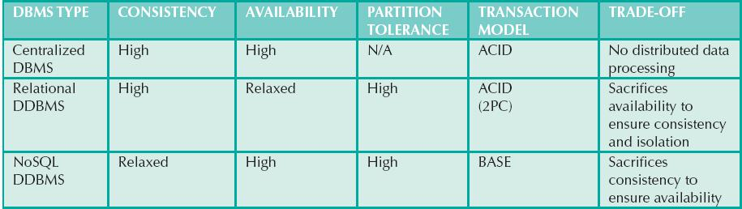
12.13 C. J. DATE’S 12 COMMANDMENTS FOR DISTRIBUTED DATABASES
The notion of distributed databases has been around for at least 20 years. With the rise of relational databases, most vendors implemented their own versions of distributed databases, generally highlighting their respective product’s strengths. To make comparisons easier, C. J. Date formulated 12 “commandments” or basic principles of distributed databases.3 Although no current DDBMS conforms to all of them, they constitute a useful target. The 12 rules are shown in Table 12.9.
TABLE 12.9 Date’s 12 Commandments for Distributed Databases
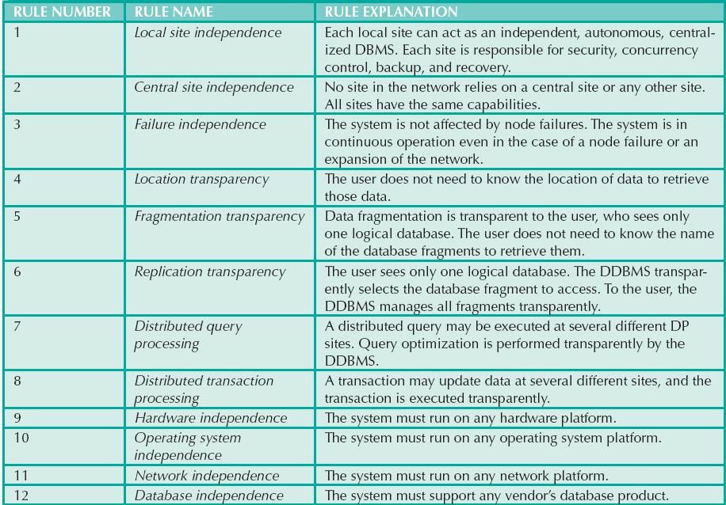
 A distributed database stores logically related data in two or more physically independent sites connected via a computer network. The database is divided into fragments, which can be a horizontal set of rows or a vertical set of attributes. Each fragment can be allocated to a different network node.
A distributed database stores logically related data in two or more physically independent sites connected via a computer network. The database is divided into fragments, which can be a horizontal set of rows or a vertical set of attributes. Each fragment can be allocated to a different network node.
Distributed processing is the division of logical database processing among two or more network nodes. Distributed databases require distributed processing. A distributed database management system (DDBMS) governs the processing and storage of logically related data through interconnected computer systems.
The main components of a DDBMS are the transaction processor (TP) and the data processor (DP). The transaction processor component is the resident software on each computer node that requests data. The data processor component is the resident software on each computer that stores and retrieves data.
Current database systems can be classified by the extent to which they support processing and data distribution. Three major categories are used to classify distributed database systems: single-site processing, single-site data (SPSD); multiple-site processing, single-site data (MPSD); and multiple-site processing, multiple-site data (MPMD).
A homogeneous distributed database system integrates only one particular type of DBMS over a computer network. A heterogeneous distributed database system integrates several different types of DBMSs over a computer network.
DDBMS characteristics are best described as a set of transparencies: distribution, transaction, performance, failure, and heterogeneity. All transparencies share the common objective of making the distributed database behave as though it were a centralized database system; that is, the end user sees the data as part of a single, logical centralized database and is unaware of the system’s complexities.
A transaction is formed by one or more database requests. An undistributed transaction updates or requests data from a single site. A distributed transaction can update or request data from multiple sites.
Distributed concurrency control is required in a network of distributed databases. A two-phase COMMIT protocol is used to ensure that all parts of a transaction are completed.
A distributed DBMS evaluates every data request to find the optimum access path in a distributed database. The DDBMS must optimize the query to reduce associated access costs, communication costs, and CPU costs.
The design of a distributed database must consider the fragmentation and replication of data. The designer must also decide how to allocate each fragment or replica to obtain better overall response time and to ensure data availability to the end user. Ideally, a distributed database should evenly distribute data to maximize performance, availability, and location awareness.
A database can be replicated over several different sites on a computer network. The replication of the database fragments has the objective of improving data availability, thus decreasing access time. A database can be partially, fully, or not replicated. Data allocation strategies are designed to determine the location of the database fragments or replicas.
The CAP theorem states that a highly distributed data system has some desirable properties of consistency, availability, and partition tolerance. However, a system can only provide two of these properties at a time.
basically available, soft state, eventually consistent (BASE)
ONLINE CONTENT
Flashcards and crossword puzzles for key term practice are available at www.cengagebrain.com.
1. Describe the evolution from centralized DBMSs to distributed DBMSs.
2. List and discuss some of the factors that influenced the evolution of the DDBMS.
3. What are the advantages of the DDBMS?
4. What are the disadvantages of the DDBMS?
5. Explain the difference between a distributed database and distributed processing.
6. What is a fully distributed database management system?
7. What are the components of a DDBMS?
8. List and explain the transparency features of a DDBMS.
9. Define and explain the different types of distribution transparency.
10. Describe the different types of database requests and transactions.
11. Explain the need for the two-phase commit protocol. Then describe the two phases.
12. What is the objective of query optimization functions?
13. To which transparency feature are the query optimization functions related?
14. What issues should be considered when resolving data requests in a distributed data environment?
15. Describe the three data fragmentation strategies. Give some examples of each.
16. What is data replication, and what are the three replication strategies?
17. What are the two basic styles of data replication?
18. What trade-offs are involved in building highly distributed data environments?
19. How does a BASE system differ from a traditional distributed database system?
The first problem is based on the DDBMS scenario in Figure P12.1.
FIGURE P12.1 The DDBMS scenario for Problem 1
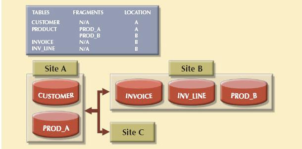
SOURCE: Course Technology/Cengage Learning
1. Specify the minimum types of operations the database must support to perform the following operations. These operations include remote requests, remote transactions, distributed transactions, and distributed requests.
At site C | |
a. SELECT | * |
| CUSTOMER; |
b. SELECT | * |
| INVOICE |
| INV_TOT > 1000; |
c. SELECT | * |
| PRODUCT |
| PROD_ QOH < 10; |
d. BEGIN WORK; | |
| CUSTOMER |
| CUS_BAL = CUS_BAL + 100 |
| CUS_NUM = ‘10936’; |
| INTO INVOICE(INV_NUM, CUS_NUM, INV_DATE, INV_TOTAL) |
| |
| INTO LINE(INV_NUM, PROD_NUM, LINE_PRICE) |
| |
| PRODUCT |
| PROD_QOH = PROD_ QOH —1 |
| PROD_NUM = ‘1023’; |
| |
e. BEGIN WORK; | |
| INTO CUSTOMER(CUS_NUM, CUS_NAME, CUS_ADDRESS, CUS_BAL) |
VALUES (‘34210’, ‘Victor Ephanor’, ‘123 Main St.’, 0.00); | |
| INTO INVOICE(INV_NUM, CUS_NUM, INV_DATE, INV_TOTAL) |
VALUES (‘986434’, ‘34210’, ‘10-AUG-2011’, 2.00); | |
| |
At site A | |
f. SELECT | CUS_NUM, CUS_NAME, INV_TOTAL |
| CUSTOMER, INVOICE |
| CUSTOMER.CUS_NUM = INVOICE.CUS_NUM; |
g. SELECT | * |
| INVOICE |
| INV_TOTAL > 1000; |
h. SELECT | * |
| PRODUCT |
| PROD_QOH < 10; |
At site B | |
i. SELECT | * |
| CUSTOMER; |
j. SELECT | CUS_NAME, INV_TOTAL |
| CUSTOMER, INVOICE |
| INV_TOTAL > 1000 AND CUSTOMER.CUS_NUM = INVOICE.CUS_NUM; |
k. SELECT | * |
| PRODUCT |
| PROD_QOH < 10; |
2. The following data structure and constraints exist for a magazine publishing company:
a. The company publishes one regional magazine in each of four states: Florida (FL), South Carolina (SC), Georgia (GA), and Tennessee (TN).
b. The company has 300,000 customers (subscribers) distributed throughout the four states listed in Problem 2a.
c. On the first day of each month, an annual subscription INVOICE is printed and sent to each customer whose subscription is due for renewal. The INVOICE entity contains a REGION attribute to indicate the customer’s state of residence (FL, SC, GA, TN):
CUSTOMER (CUS_NUM, CUS_NAME, CUS_ADDRESS, CUS_CITY, CUS_ZIP, CUS_SUBSDATE)
INVOICE (INV_NUM, INV_REGION, CUS_NUM, INV_DATE, INV_TOTAL)
The company is aware of the problems associated with centralized management and has decided to decentralize management of the subscriptions into the company’s four regional subsidiaries. Each subscription site will handle its own customer and invoice data. The management at company headquarters, however, will have access to customer and invoice data to generate annual reports and to issue ad hoc queries such as:
• Listing all current customers by region
• Listing all new customers by region
• Reporting all invoices by customer and by region Given those requirements, how must you partition the database?
3. Given the scenario and requirements in Problem 2, answer the following questions:
a. What recommendations will you make regarding the type and characteristics of the required database system?
b. What type of data fragmentation is needed for each table?
d. Design the database fragments. Show an example with node names, location, fragment names, attribute names, and demonstration data.
e. What type of distributed database operations must be supported at each remote site?
f. What type of distributed database operations must be supported at the headquarters site?
1 The details of distributed requests and transactions were originally described by David McGoveran and Colin White, “Clarifying Client/Server,” DBMS 3(12), November 1990.
2 “Towards Robust Distributed Systems,” Eric A. Brewer, University of California at Berkeley and Inktomi Corporation, presentation at the Principles of Distributed Computing, ACM Symposium, July 2000. This theorem was later proven by Seth Gilbert and Nancy Lynch of MIT in their paper “Brewer’s Conjecture and the Feasibility of Consistent, Available, Partition-Tolerant Web Services,” ACM SIGACT News, vol. 33, Issue 2, 2002.
3 Date, C. J., “Twelve Rules for a Distributed Database,” Computerworld, June 8, 1987, 2(23).